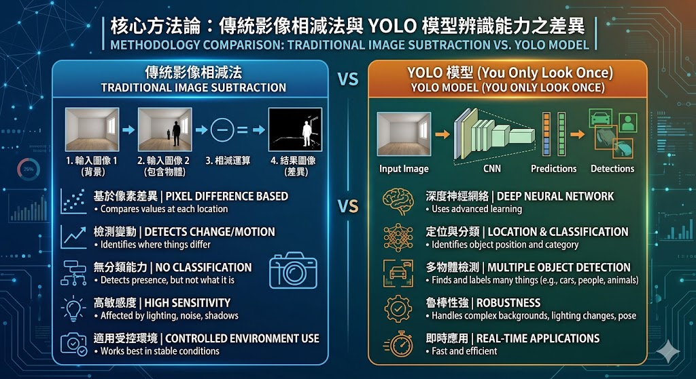
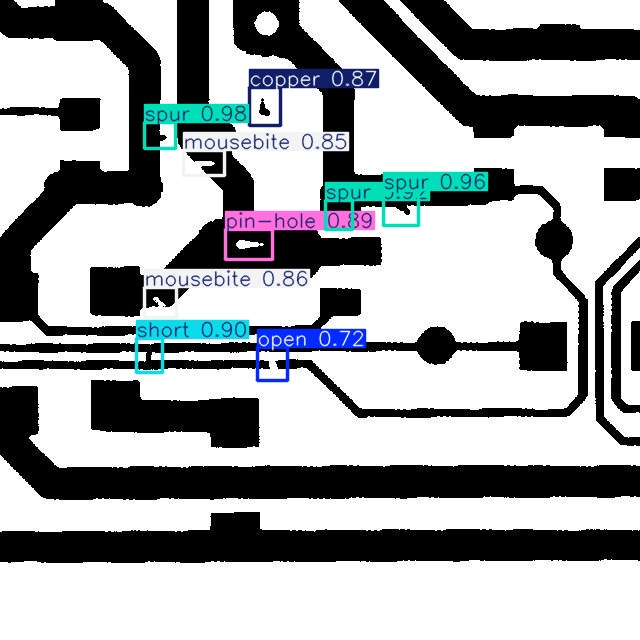

專題報告：基於 YOLO 深度學習之 PCB 瑕疵自動光學檢測 (AOI) 系統
1. 檢測物件 (Item 1)
本專案致力於實現一個高準確率、高泛化能力的印刷電路板 (PCB) 瑕疵檢測系統。傳統工業生產線中，PCB 裸板檢測往往依賴人工目視或昂貴機台。本系統的目標物件為 PCB 裸板二值化影像，並針對工業界常見的六大類致命瑕疵進行精準定位與分類：
圖 1-1：檢測目標 - 包含六大類常見 PCB 瑕疵
- Open (斷路)：線路中斷，會導致電流無法導通，屬於重大功能性缺失。
- Short (短路)：兩條不該相連的線路發生異常沾黏與導通。
- Mousebite (鼠咬)：線路邊緣呈現不規則缺損，會造成局部阻抗異常。
- Spur (毛刺)：線路邊緣多出的不規則凸起銅渣，易引發訊號干擾。
- Copper (殘銅)：在不該有銅的基板絕緣區域殘留了孤立銅塊。
- Pin-hole (針孔)：線路中間蝕刻過度出現的微小空洞。
2. 檢測方法 (Item 2)
本專案經歷了從傳統演算法到深度學習的技術跨越，純粹依賴 AI 特徵學習，取代了僵化的幾何比對：
- 傳統方法的痛點： 初期曾嘗試使用 OpenCV 的 Template Matching (影像相減法)。此方法極度依賴測試圖與標準圖的「完美對齊 (Alignment)」，產線物件只要有些微的平移或角度旋轉，相減後就會產生大量紅框誤判，完全無法適應多變的實際工廠環境。
- 導入深度學習 (YOLO 模型)： 全面導入目前業界先進的
YOLOv8 物件偵測演算法。AI 不需要「標準無瑕疵圖」作強制對比，而是透過卷積層自主學習瑕疵的「局部特徵與幾何紋理」，具備極高的強健性 (Robustness) 與泛化能力。

圖 2-1：核心方法論 - 傳統影像相減法與 YOLO 模型辨識能力之差異
3. 檢測流程與硬體架構 (Item 3)
本系統的開發與運作流程分為三個主要階段，建構了完整的 MLOps (機器學習營運) 週期。特別在推論階段，我們打破傳統工業相機的限制，引入虛擬化硬體技術：
1. 資料建置 (Data Preparation)
撰寫 Python 自動化腳本清洗開源資料集，並將絕對像素座標矩陣自動正規化轉換為 YOLO 專用的 0~1 比例標註格式。
2. 模型訓練 (Model Training)
配置 GPU CUDA 加速環境，選用輕量且極速的 YOLOv8n 模型進行權重迭代，持續監控 Loss 收斂狀態以優化模型智商。
3. iVcam 手機實時推論 (Inference)
載入最佳權重檔 (best.pt)，透過 iVcam 技術將智慧型手機鏡頭虛擬化為系統對外採樣的「行動眼」，利用無線串流進行動態影像擷取與實時邊緣運算推論。
4. 資料前處理關鍵技術 (Item 4)
在進入深度學習黑盒子之前，資料的質與量決定了最終推論的成敗。本專案進行了以下關鍵處理：
技術一：座標系統正規化 (Normalization)
由於不同攝影源的解析度各異，我們透過矩陣運算精確算出每個瑕疵框的長寬與中心點，並將數值壓縮至 0~1 之間，確保 AI 模型在任何硬體解析度下都能通用。
技術二：資料擴增與變異泛化 (Generalization)
撰寫腳本將不同批號的影像進行合併，並導入隨機旋轉、亮度偏移與雜訊注入。這種策略刻意引入良性變異，大幅提升了模型面對未知 PCB 型號時的適應冗餘度。
5. 檢測結果 (Item 5)
系統成功達成實時多目標偵測，不僅能同時標示多種類別的瑕疵，更達到極高的推論速度：

圖 5-1：實時檢測畫面 - 系統精準框出短路與斷路，並附帶信心指數
- 高精準度：每個瑕疵皆以專屬顏色的 Bounding Box 即時標出，嚴重瑕疵（如短路、斷路）的檢出率表現優異，有效降低工業漏報率。
- 極速推論：受惠於 YOLO 架構特性與本機 GPU 運算，單幅影像推論時間壓縮至毫秒 (ms) 級別，完全具備取代傳統慢速 AOI 機台的潛力。
6. 專題應用與 iVcam 技術克服 (Item 6)
本系統跳脫了傳統大型檢測設備的空間制約，具備高彈性與落地價值。其實務應用與核心技術排錯包含：
- 低成本智造：手機化身行動檢測眼
傳統工廠升級自動化需採購昂貴的工業相機。本專案創新地導入 iVcam 虛擬攝影機技術，成功將手持智慧型手機的鏡頭，經由 Wi-Fi 網路或高速 USB 傳輸線，無縫映射為後端 C++ / Python OpenCV 程式碼中的 cv::VideoCapture 標準視訊源。這讓品管人員能直接拿著手機對準固定於大型設備內部的 PCB 電路板進行彈性巡檢，實現了高度便攜的行動檢測方案。
- 雙執行緒優化串流延遲
在利用 iVcam 傳輸高解析度 (1080p) 的實時畫面時，頻寬波動曾導致推論影像出現局部變形與時間滯後。為此，專案優化了軟體架構，在後端配置雙執行緒管線：一個執行緒專職以最高幀率向 iVcam 緩衝區抓取即時影像流，另一個執行緒則專注於 YOLO 矩陣推論與繪製 Bounding Box，成功將動態檢測延遲降至肉眼不可察的範圍，確保影像流暢不掉幀。
- 多核心運算崩潰排除
在 Windows 本機環境下結合 iVcam 視訊源進行實時 AI 訓練與推論時，曾遭遇多核心並行運算 (Multiprocessing) 的 RuntimeError 系統崩潰。專案透過重構程式架構，在程式入口處強制實施 if __name__ == '__main__': 保護機制，並妥善管理資料流的互斥鎖 (Mutex)，徹底完善了本機端的穩定執行環境。
7. 心得與貢獻 (Item 7)
從這個專案中，我經歷了從「傳統影像處理」撞牆，進而勇敢跨入「深度學習領域」的思維轉變。最大的貢獻在於從零建置了資料清洗、模型收斂監控、GPU 加速到終端推論的完整 MLOps 流程，並成功利用 iVcam 技術將 AI 演算法與行動手機硬體串接，做出一套能真正隨手展示、動態追蹤的智慧行動檢測系統，深刻體會到軟體可靠度與實務落地應用的巨大潛力。